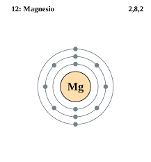

Los metales alcalinotérreos son un grupo de elementos que se encuentran situados en el grupo 2 de la tabla periódica y son los siguientes: berilio (Be), magnesio (Mg), calcio (Ca), estroncio (Sr), bario (Ba) y radio (Ra). Este último no siempre se considera, pues tiene un tiempo de vida media corto.
El nombre «alcalinotérreos» proviene del nombre que recibían sus óxidos, «tierras», que tienen propiedades básicas (alcalinas). Poseen una electronegatividad ≤ 1,57 según la escala de Pauling.
Los alcalinotérreos son más duros que los metales alcalinos, tienen brillo y son buenos conductores eléctricos; menos reactivos que los alcalinos, buenos agentes reductores y forman compuestos iónicos. Todos ellos tienen dos electrones en su capa más externa (electrones de Valencia).
El berilio es un elemento químico de símbolo Be y número atómico 4. Es un elemento Alcalinotérreo bivalente, tóxico, de color gris, duro, ligero y quebradizo. Se emplea principalmente como endurecedor en aleaciones, especialmente de cobre.
Número atómico: 4
Configuración electrónica: [He] 2s²
Masa atómica: 9.012182 u
Electrones por nivel: 2,2
Electronegatividad: 1.57
Descubrimiento: 1797
El magnesio es el elemento químico de símbolo Mg y número atómico 12. Su masa atómica es de 24,305 u. Es el octavo elemento en abundancia en el orden del % de la corteza terrestre y el tercero más abundante disuelto en el agua de mar. El ion de magnesio es esencial para todas las células vivas.
Masa atómica: 24.305 u
Número atómico: 12
Configuración electrónica: [Ne] 3s2
Electronegatividad: 1.31
Radio de Van der Waals: 173 pm
Descubridores: Humphry Davy, Joseph Black
El calcio es un elemento químico, de símbolo Ca y de número atómico 20. Su masa atómica es 40,078 u. El calcio es un metal blando, grisáceo, y es el quinto más abundante en masa de la corteza terrestre.
Masa atómica: 40.078 u
Número atómico: 20
Configuración electrónica: [Ar] 4s²
Electronegatividad: 1
Radio de Van der Waals: 231 pm
Descubrimiento: 1808
El estroncio es un elemento químico de la tabla periódica cuyo símbolo es Sr y su número atómico es 38.
Configuración electrónica: [Kr] 5s2
Número atómico: 38
Masa atómica: 87.62 u
Descubrimiento: 1790
Punto de fusión: 777 °C
Descubridores: Humphry Davy, Adair Crawford, William Cruickshank
El bario es un elemento químico de la tabla periódica cuyo símbolo es Ba y su número atómico es 56. Metal alcalinotérreo, el bario es el 18.º elemento más común, ocupando una parte de 2000 de la corteza terrestre. Su masa atómica es 137,34.
Número atómico: 56
Configuración electrónica: [Xe] 6s2
Masa atómica: 137.327 u
Electronegatividad: 0.89
Radio de Van der Waals: 268 pm
Descubridores: Carl Wilhelm Scheele, Humphry Davy
El radio es un elemento químico de la tabla periódica. Su símbolo es Ra y su número atómico es 88. Es de color blanco inmaculado, pero se ennegrece con la exposición al aire. El radio es un alcalinotérreo que se encuentra a nivel de trazas en minas de uranio.
Configuración electrónica: [Rn] 7s2
Descubrimiento: 21 de diciembre de 1898
Número atómico: 88
Masa atómica: 226 u
Radio de Van der Waals: 283 pm
Descubridores: Marie Curie, Pierre Curie